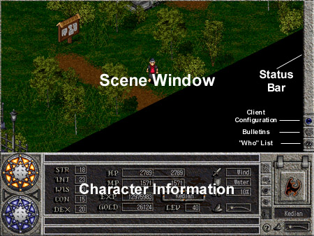
The Scene Window
This is your perspective in Dark Ages. You will see other players, monsters, and items. This window serves as your "eyes" in the Dark Ages world.
The Status Bar
From time to time, Aislings or monsters will cast spells on you. If they have a lasting effect, the status bar will illustrate when they run out. Under the status bar, there are also several icons. Click on the icons to find out more about their functions.
|
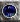 Client Configuration 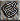 Online Bulletins 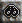 The "Who" List (see who is online) |
The Character Information Panel
This panel allows you to find out more about your character, and is what you will use to cast spells, drop items, view your character's statistics, etc. Click on the icons to find out more about their function.
|
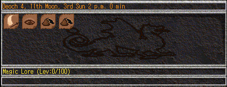 The Main Window |
|
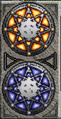 Mana/Vitality Indicators |
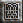 Inventory 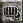 Skills 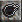 Spells 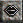 Communication Character Statistics |
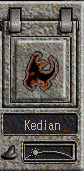 Sidebar |